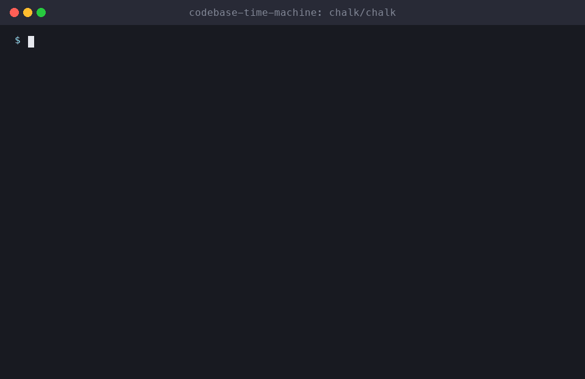

⏳ codebase-time-machine
The story of your repo from git history, as a documentary: eras, cast, plot twists, cursed files. A free, open-source Agent Skill for Claude Code, Cline, Cursor, Codex and 75+ AI agents.

Install codebase-time-machine
# Claude Code (all 51 skills)
/plugin install all-skills --marketplace milad-ahmd/agent-skills
# Cursor, Codex, Cline, Windsurf, Copilot + 75 more agents
npx skills add milad-ahmd/agent-skills --skill codebase-time-machine
# Shell installer
curl -fsSL https://raw.githubusercontent.com/milad-ahmd/agent-skills/main/install.sh | bash -s -- codebase-time-machineIncluded in packs: fun-pack
What to say to your agent
Tell me the story of this codebaseWho built what in this repo, and when?
When it triggers
Tells the story of a codebase from its git history as an entertaining documentary, with eras, key contributors, plot twists (reverts, giant commits, long silences), cursed files, and the current state, backed by a git analysis script. Useful for onboarding, retrospectives, anniversaries, and fun. Use when the user asks for the history of a repo, how a project evolved, a repo story or timeline, or "who built what and when".
Full skill instructions (SKILL.md)
Codebase Time Machine ⏳
"In the beginning, there was Initial commit…"
1. Collect the facts
python3 scripts/git_timeline.py [path/to/repo] # defaults to current directory
python3 scripts/git_timeline.py . --max 5000 # limit for huge repos
git -C <repo> tag --sort=creatordate | tail -20 # releases, if anyThe script reports the span, commits per year, top authors, the biggest commits, the most-changed ("cursed") files, reverts and hotfixes, and the longest silence. Read key commits (git show --stat <hash>) before narrating them.
2. Narrate (default style: nature documentary; also epic, noir, sports commentary or plain)
# 🎬 <Project>: The Story So Far
## Prologue: <first commit date, first message, first files>
## Chapter 1: <era name> (<years>): what was built, by whom, defining commits
## Chapter 2: ... (split eras by activity bursts, long gaps, big refactors, major tags)
## 🎭 The Cast: top contributors and what they shaped (no judgments about people)
## 🌪️ Plot Twists: reverts, giant commits, the great silence of <dates>
## 👻 Cursed Files: most-changed files and why they keep changing
## 📍 Present Day: current state, active areas
## 🧭 Lessons for newcomers: where the dragons are, what to read firstRules
- Facts come only from git. Quote commit messages exactly, with their short hashes. Speculation is labelled as such ("probably", "it seems").
- Be kind about people. Celebrate them; never mock them. Don't print email addresses.
- For private or company repos, ask before producing anything meant to be shared publicly.
View source on GitHub ⭐ Star the collection